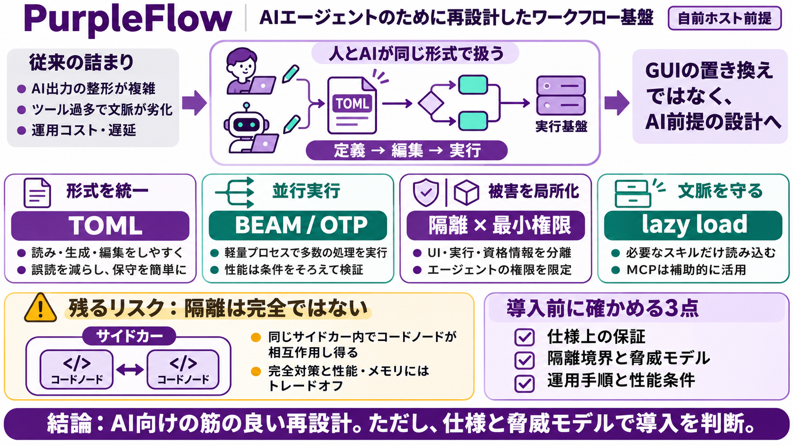

Features | Purple8
Stateful workflows, SLA enforcement, human-approval gates, and an immutable audit trail — all in the same process. AI ag…

AI時代のワークフロー基盤
PurpleFlowは、AIエージェントが扱いやすい形式でワークフローを定義・実行し、さらにエージェント群まで組み立てるための自前ホスト前提のオートメーション基盤です（n8nの再想像）。
AI自動化の“詰まり”
n8nの思想は活かしつつ、AIエージェント出力の扱い、ストリーミング、MCP連携の設計難、レイテンシ、自己ホスト中間レイヤーの価格、運用とスケールの要件が課題になっています。
OpenAI JSON等の出力を“そのまま”流しにくい（誤り率・保守性の問題）。
MCP連携で依存やツール整理が難化しやすい。
中間レイヤーのコスト、レイテンシ、自己ホストのスケール/ライセンス。
鍵は“形式”
ワークフローをプレーンテキストのTOMLとして管理し、エージェントが読み・生成・編集しやすい形に揃えます（人と機械が同じ言語で扱う）。
生成物の品質を上げる／保守を簡単にする。 Format → Reliability を直結させる発想。
“GUIワークフロー”ではなく、AI向けの誤読を減らす構造化。 日本語注：TOML（Toml）は設定向けの読みやすい形式。
実行基盤の“座布団”
実行基盤はElixir/OTP上のBEAM VM。軽量プロセス設計で高い並行性と省メモリを狙い、例として最大10,000同時実行が言及されます。
多数のワークフロー/処理を同時にさばく設計思想。
軽量プロセス（BEAMの強み）を活かす。
ベンチ条件は docs/ を確認する前提が推奨される。
被害を小さく
UIと実行環境、ファイル、資格情報を分離し、エージェントには“ワークフロー操作”のみに限定したトークンを付与します（資格情報そのものには到達しにくくする）。
ファイルサービス（dufs）／コードノードランナー／資格情報（暗号化）を別に扱う。
エージェントはUIの全データや実行履歴・資格情報へ直接アクセスしない前提。
“スキル過多”を避ける
MCPは補助的に扱い、「必要なスキルだけを遅延ロード（lazy load）」して、ツール過多による推論の混乱や文脈の劣化（context rot）を減らす方針です。
互換性や補助目的。全面採用が目的ではない。
スキル名に応じて必要ワークフローだけを動的に読む。
推論負荷とツール乱立の悪影響を抑える。
運用の“反映速度”
UIではファイル編集（Filesページ等）でワークフローを更新し、読み込みは約2秒で反映され、壊れた場合は「最後にロードできた版で継続」する挙動が示されています。
Humanが直接ワークフロー編集できる導線を用意。
エージェントはトークン付きHTTP（/fs/）やWebDAVで編集可能とされる。
“同等”ではない
PurpleFlowは「n8nの代替」というより、AIエージェントが使いやすいデータ形式（TOML）、隔離された実行、スキル遅延ロード、権限最小化を中心に“設計を作り直した”位置づけです。
JSON等をそのまま繋ぐより、TOMLで統一。
コードノードをサイドカーで隔離。
lazy loadでツール過多を抑える。
未解決の核心
最大の未解決課題として「コードノード同士が同一サイドカー内で相互作用し得る」ことが挙げられています。完全対策は性能/メモリが重くなり得るため、効率優先で暫定とされています。
隔離境界が“完全”ではなく、同一サイドカー内の相互作用が成り得る可能性。
利用者が脅威モデルを作り、受容する範囲を決める必要がある。
導入判断の要点
READMEの熱量は参考にしつつ、（i）specs/docsの形式的保証、（ii）隔離境界の成立条件、（iii）攻撃モデルに対する設計適合を確認するのが安全です。
隔離の境界・相互作用条件・暗号化の範囲。
リバースプロキシ/HTTPS、環境変数、手順の細部。
ベンチ条件の公平性（I/O/外部依存/ワークロード）。
結論（読後一発）
PurpleFlowは、TOML形式・権限最小化・サイドカー隔離・lazy loadで、AIがワークフローを生成・運用する前提を設計に落とし込んでいます。一方で最大リスクを認めているため、導入はspecs/docsと脅威モデルで判断すべきです。
TOML（形式統一）／BEAM（並行性）／分離（被害局所化）／文脈管理（lazy load）。
コードノード相互作用が未解決。性能/メモリとのトレードオフが残る。
参照先（追加確認）
以下は今回の要約内で「本文からは確証しにくいので確認推奨」とされた領域です（実際のURLはPurpleFlowリポジトリ構成に依存）。
docs/n8n_case_study.md（性能ベンチ条件・検証の前提）
specs/（仕様・隔離境界・権限制御の明文化）
n8nのMCP連携/セキュリティ機能の整理（差異確認のための一般情報）
日本語補足：ここでは「与えられた要約・分析」を根拠にスライド化しています。最終判断は必ずPurpleFlowの該当章（docs/specs）で裏取りしてください。
Stateful workflows, SLA enforcement, human-approval gates, and an immutable audit trail — all in the same process. AI ag…
## The USB-C for your AI stack Connect n8n to just about any tool you can think of. 500+ native integrations. Any AP…
400+ pre-configured integrations with popular services: + Google Sheets, Outlook, Slack, Notion, GitHub + MySQL, Pos…
## About Fair-code workflow automation platform with native AI capabilities. Combine visual building with custom code, …
minute. Different optimization priorities. Learning curve versus power. N8N has a steeper learning curve. Its visual edi…